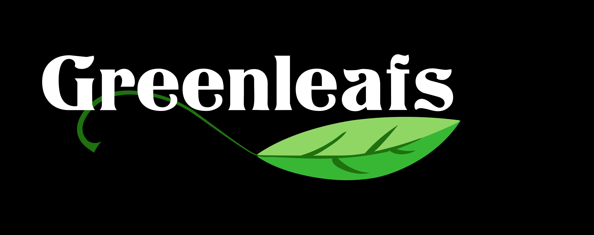
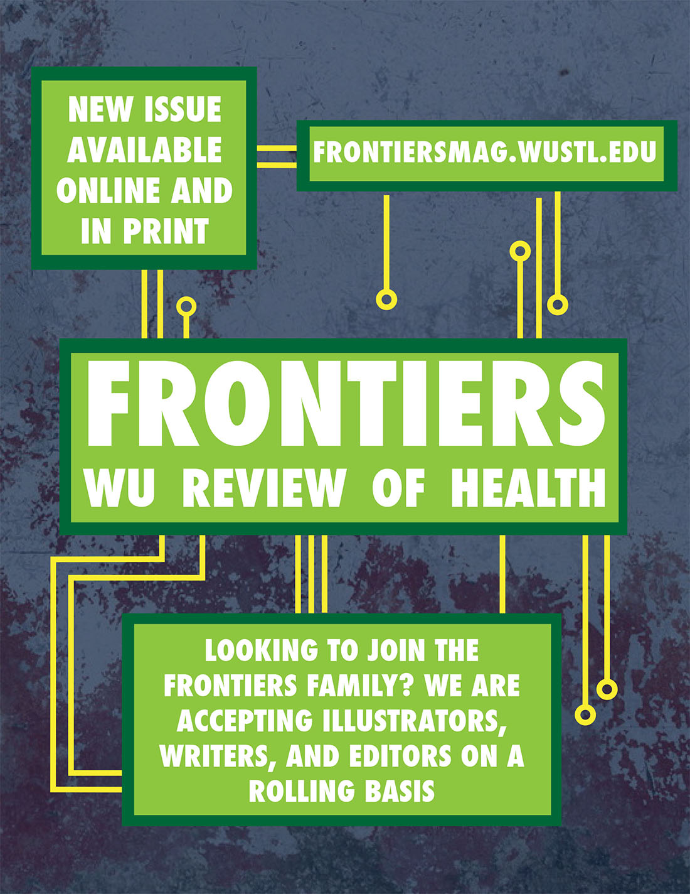

Commissions
The Greenleafs
Various versions of the Greenleafs logo. The Greenleafs are WashU's premiere all-women's a capella group.

WashU Brazilian Jiu Jitsu
Logo created for the Washington University in St. Louis Brazilian Jiu Jitsu Club, to be used on promotional materials and apparel for the club.

Colorado Banker's Association
Redesigned logo for the Colorado Banker's Association, incorporating a fingerprint into their regular logo.
Frontier's Magazine
Facebook profile imaged used by Frontier's Magazine, a magazine striving to relate health to the Washington University community as a whole and make medicine more understandable and relevant to students.
WashU Students for Israel
Logo for WashU Students for Israel, an on-campus student group dedicated to providing students with the opportunity to learn about issues involving Israel and the Middle East.